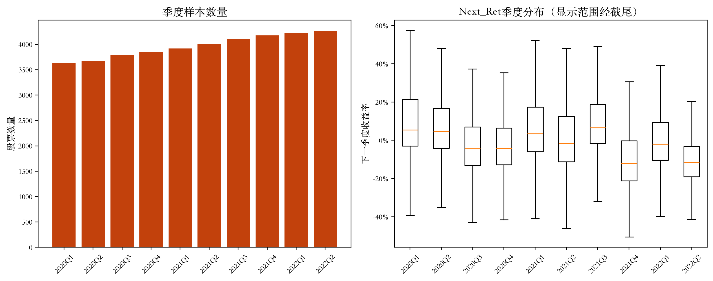
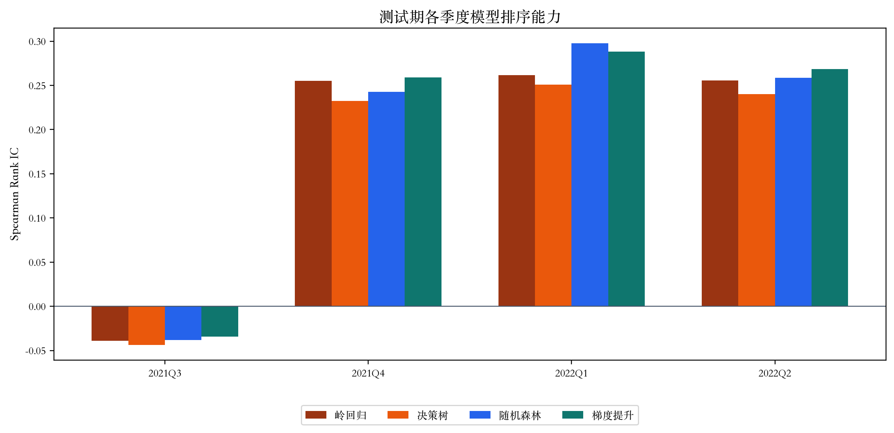
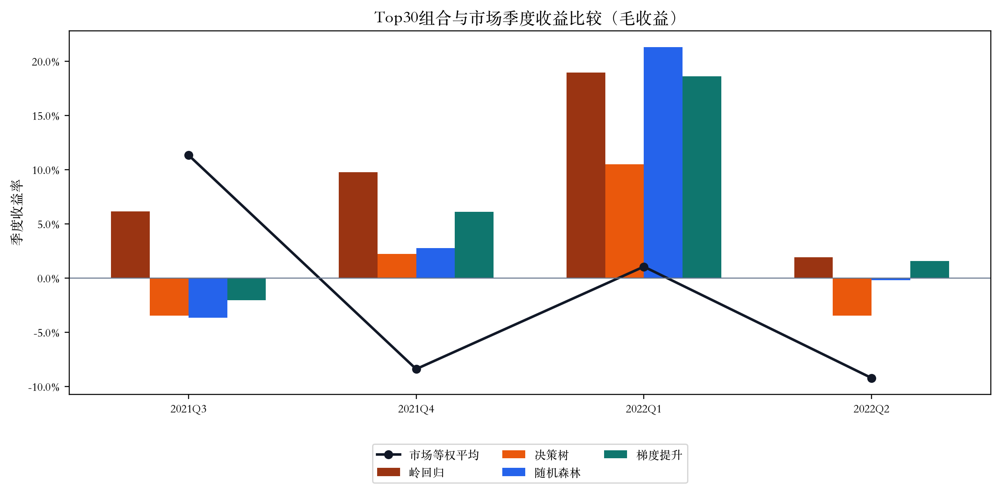
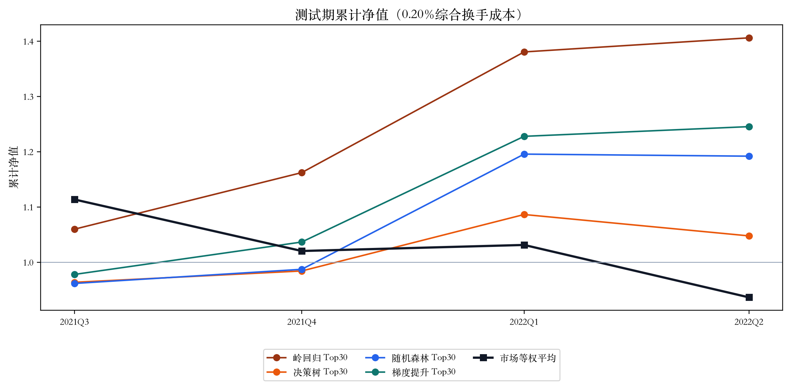
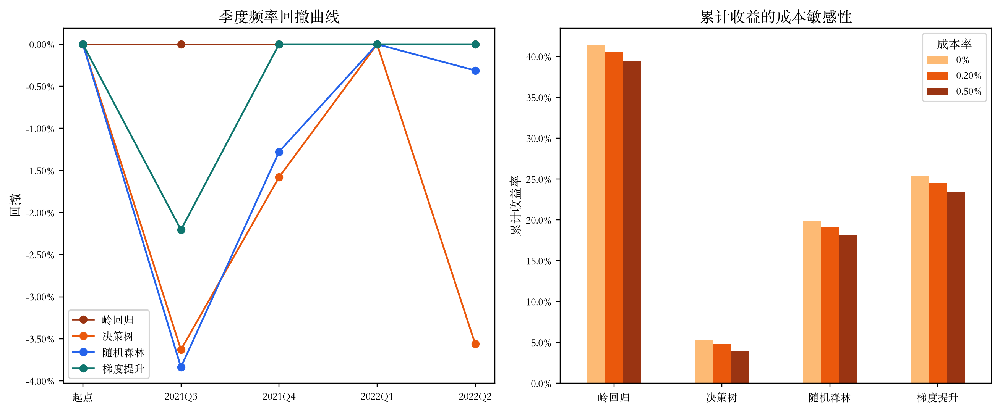
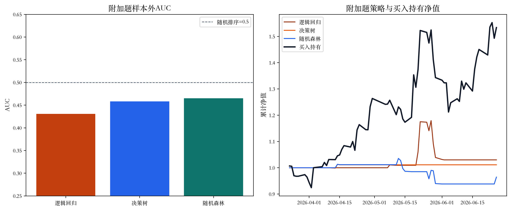

一、研究问题与实验边界
机器学习模型不直接发出买卖指令，而是估计同一季度内股票未来收益的相对顺序。模型评分经过 Top30 筛选、等权配置、季度调仓、成本扣减和风险评价后，才形成可回测的交易策略。
一次性时间外测试：前 6 个季度训练，后 4 个季度测试，不随机打乱，也不根据测试期结果重新调参。
信息边界：课程数据没有真实财报公告日期、行业、停牌与涨跌停数据，因此这里只能把 Date 视为特征可得时点，不能把结果等同于真实可成交业绩。
二、数据诊断与特征工程
主数据共 39,616 行、22 列，日期—代码重复 0 行、缺失 0 个、无穷值 0 个。Next_Ret 最小约 −79.99%、最大约 640.66%，估值和同比增长指标也具有明显长尾，因此原始数值不直接进入模型，而是先在每个季度内进行横截面百分位排名。

模型最终使用 22 个特征：19 个原始因子的季度排名、价值综合因子、成长综合因子和规模因子。非正估值指标在价值综合因子中按无效低分处理；应变量为每季度 Next_Ret 的横截面百分位排名，真实 Next_Ret 只用于测试期组合收益计算。
三、四类模型的排序能力
统一比较岭回归、决策树、随机森林和直方图梯度提升。参数在测试前固定：岭回归 alpha=10；决策树最大深度 5、叶节点最少 100；随机森林 300 棵树、最大深度 8；梯度提升 200 轮、学习率 0.05。
| 模型 | MAE（排名） | RMSE（排名） | 平均 Rank IC | IC 标准差 | ICIR |
|---|---|---|---|---|---|
| 梯度提升 | 0.242 | 0.283 | 0.195 | 0.154 | 1.271 |
| 随机森林 | 0.242 | 0.284 | 0.190 | 0.154 | 1.234 |
| 岭回归 | 0.243 | 0.284 | 0.183 | 0.148 | 1.235 |
| 决策树 | 0.244 | 0.285 | 0.170 | 0.143 | 1.190 |

结论：梯度提升的全截面平均 Rank IC 最高，但所有模型在 2021Q3 同时失效，说明排序关系对市场状态敏感，四个测试季度不足以证明长期稳定性。
四、Top30 交易策略与季度收益
每个测试季度按预测分数降序选择 30 只股票，若分数并列则按代码排序，组合等权。市场基准是同季度全样本股票的等权平均 Next_Ret。首次建仓换手率为 100%，之后为 1 减去前后季度重合股票数除以 30；净收益等于毛收益减去成本率乘换手率。
| 季度 | 市场 | 岭回归 | 决策树 | 随机森林 | 梯度提升 |
|---|---|---|---|---|---|
| 2021Q3 | 11.36% | 6.18% | −3.43% | −3.64% | −2.01% |
| 2021Q4 | −8.37% | 9.80% | 2.23% | 2.80% | 6.13% |
| 2022Q1 | 1.07% | 18.97% | 10.50% | 21.31% | 18.65% |
| 2022Q2 | −9.20% | 1.95% | −3.45% | −0.19% | 1.58% |


五、核心指标、换手与成本敏感性
| 模型 | 累计收益 | 年化波动 | 夏普 | 最大回撤 | 胜率 | 平均换手 | 累计超额 |
|---|---|---|---|---|---|---|---|
| 岭回归 | 40.62% | 14.45% | 2.51 | 0.00% | 100% | 77.50% | 46.97% |
| 梯度提升 | 24.55% | 18.01% | 1.31 | −2.21% | 75% | 84.17% | 30.90% |
| 随机森林 | 19.20% | 22.26% | 0.88 | −3.84% | 50% | 80.00% | 25.55% |
| 决策树 | 4.77% | 13.22% | 0.40 | −3.63% | 50% | 66.67% | 11.13% |
| 市场等权平均 | −6.35% | — | — | — | — | — | 基准 |
交互查看成本敏感性

岭回归的季度最大回撤为 0，只表示四个季末净值点之间没有下降，不能说明季度内部风险为 0。真实交易还需计入佣金最低收费、印花税、滑点、停牌、涨跌停和市场冲击。
六、模型解释：预测指标与策略指标并不等价
全截面排序
梯度提升平均 Rank IC 最高，说明它更善于对四千余只股票做整体排序。随机森林也明显优于单棵决策树，集成方法缓解了单树对市场阶段变化的敏感性。
极端头部收益
Top30 经济收益最高的却是岭回归，说明“全市场平均排序能力”与“排名最前 30 只股票的收益”并不完全一致。模型选择必须同时比较 IC、组合收益、换手和风险。
| 排名 | 特征 | 重要性 |
|---|---|---|
| 1 | 基本每股收益（同比增长率） | 0.1812 |
| 2 | 市净率 PB（MRQ） | 0.0980 |
| 3 | 净利润同比增长率 | 0.0970 |
| 4 | 企业倍数（EV/EBITDA） | 0.0637 |
| 5 | 营业利润同比增长率 | 0.0501 |
| 6 | MV | 0.0429 |
| 7 | 利润总额同比增长率 | 0.0427 |
| 8 | size_score | 0.0409 |
| 9 | value_composite | 0.0374 |
| 10 | 净资产同比增长率 | 0.0366 |
树不纯度重要性描述模型使用变量进行分裂的频率，不代表因果关系，并可能偏向可分裂点较多的变量。
七、附加题：中芯国际日线方向模型
附加实验使用中芯国际 688981.SH 的 237 条本地日线，完成日期、重复、OHLC 逻辑、缺失和异常收益检查后，以 20 日窗口构造动量、MA5/MA20、RSI14、5/20 日波动率、ATR14、量比和成交额比等 12 个特征，得到 215 个可用样本。
第 t 日收盘后计算特征，目标是 open[t+2] / open[t+1] − 1 > 0，最早在 t+1 日开盘执行并持有到 t+2 日开盘。前 70% 训练、后 30% 测试；上涨概率不低于 0.55 且 MA5>MA20 时持有，概率不高于 0.45 或趋势失败时空仓。
| 模型 | AUC | 平衡准确率 | F1 | 成本后累计收益 | 夏普 | 市场暴露 | 入场次数 |
|---|---|---|---|---|---|---|---|
| 随机森林 | 0.465 | 0.463 | 0.426 | −3.57% | −0.77 | 13.85% | 5 |
| 决策树 | 0.458 | 0.452 | 0.143 | 1.12% | 1.53 | 3.08% | 1 |
| 逻辑回归 | 0.431 | 0.449 | 0.308 | 3.00% | 0.52 | 12.31% | 3 |
| 买入持有 | — | — | — | 53.36% | 3.00 | 100% | 1 |

有价值的负结果：短样本单股票方向模型没有可验证的预测优势。测试期又处于明显单边上涨阶段，低市场暴露使择时策略错失主要行情，证明“机器学习策略一定优于简单基准”并不成立。
八、结论、局限与复现检查
- 季度基本面与估值因子对未来横截面收益具有一定排序信息，但 2021Q3 所有模型负 IC，稳定性不足。
- 梯度提升的全截面 Rank IC 最高，岭回归的 Top30 经济收益最高，预测指标与策略指标必须联合评价。
- 成本敏感性没有改变本测试期相对结论，但真实成本与成交约束可能明显降低收益。
- 测试期只有四个季度，季度净值无法反映季内真实最大回撤，结果不能外推为长期有效性。
复现与质量控制
- 主数据 SHA256：
ac54f1f78a6f1f9b17c3e87c7a6634cede827ffcfddd89dfa4c4c06363e8bead - 固定随机种子 42；完整流程重复运行后，预测、持仓、季度收益与模型指标 CSV 哈希完全一致。
- 8 项自动化测试全部通过，覆盖时间切分、目标泄漏、Top30 数量与权重、换手边界、成本单调性、Rank IC、回撤和附加题执行时点。
历史课程研究，仅用于学习与方法展示，不构成投资建议。© 2026 柳智炀